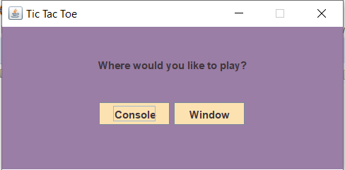
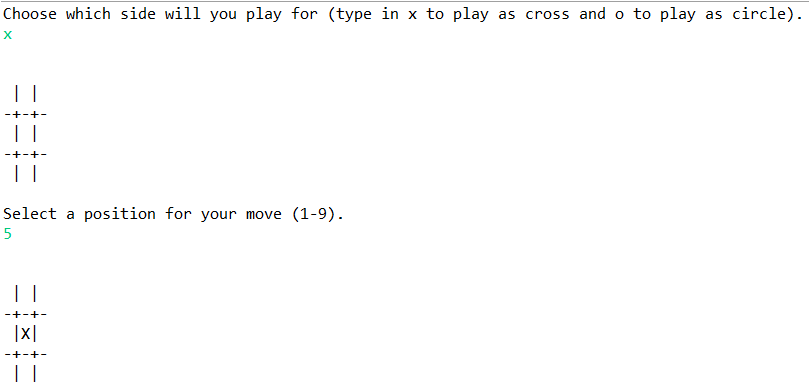
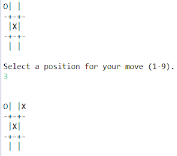
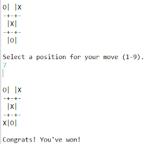
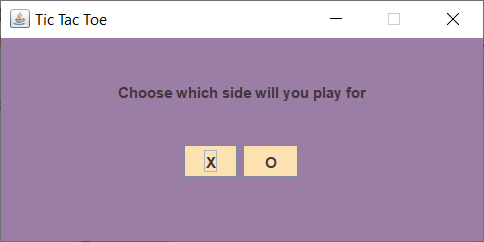
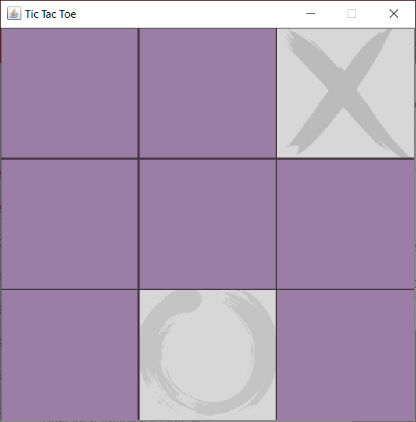
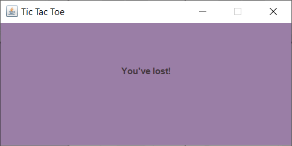

Пример программы на Java
Ниже представлена программа, реализующая игру в крестики-нолики, где игрок противостоит компьютеру. Игровое поле представлено в виде массива из 9 символов, изначально хранящего пробелы и по мере игры заполняющегося крестиками или ноликами. В начале работы программы игроку предлагается выбрать формат игры и сторону, за которую он будет играть. В зависимости от этого выбора определяется переменная curPlayer, показывающая, кто делает текущий ход (1 - человек, 2 - компьютер). Затем на экран или консоль выводится игровое поле (пустое, если игрок выбрал крестик, или с одним крестиком, размещенным компьютером, в противном случае). Далее игроку предлагается выбрать клетку для своего хода (число от 1 до 9). Компьютер выбирает ячейку случайным образом, проверяя, чтобы она была свободна. Ходы каждой из сторон записываются в соответствующие списки в виде номеров позиций.
Игра длится до тех пор, пока не будет достигнута одна из выигрышных ситуаций, хранящихся в массиве winSituations, или пока не будет сделано 9 ходов без достижения победы одной из сторон.
Перед началом игры программа даёт выбрать форму игры.

При выборе формата игры через консоль:
Программа предлагает игроку выбрать сторону, за которую он будет играть. После этого даёт сделать ход.

Компьютер делает свой ход.

Игра заканчивается победой игрока.

При выборе формата игры через GUI:
Игрок выбирает сторону.

Ход игры.

Игра заканчивается проигрышем игрока.

Код программы можно найти здесь: https://github.com/KristinaZayats/TicTacToe.
Если среда для того, чтобы запускать Java, ещё не была установлена, то можно воспользоваться онлайн компилятором.
Ссылка: https://www.jdoodle.com/online-java-compiler/.